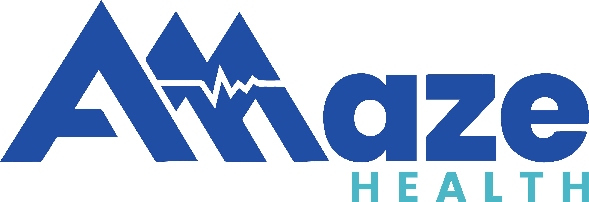

Powered by Amaze Health
A Section 125 fixed-indemnity wellbeing program built on Capitol Group's carrier infrastructure, delivered through Nexus Benefit Solutions with Insight Benefits as TPA.
Live view of in-flight workstreams across Nexus, Capitol, Insight, and Amaze. Updated as the project moves.
| Task | Owner | Status |
|---|---|---|
| Latest ASA / Compliance Protection / Request for Coverage drafts | Capitol — Connie | Open |
| Eligibility file format finalization | Capitol CEHAS IT + Nexus | In flight |
| CEHAS + insurer signature contact details | Capitol — Connie | Open |
| Sample eligibility CSV review | Capitol — Connie / CEHAS IT | Delivered — awaiting review |
| Sample payroll summary + invoice review | Capitol — Connie | Delivered — awaiting review |
| Compliance walkthrough (Insight TPA checklist vs. Capitol) | Insight — Howard ↔ Capitol — Connie | Scheduling |
| Amaze Health intro meeting | Nexus — Jason + Amaze + Insight | Scheduling |
| Payroll vendor priority list | Nexus — Brenda Manning | In flight |
| Friday 5/22 walkthrough with Scott | Nexus — Jason + Brenda Manning | Scheduled |
| Capitol ops team presentation | Capitol ops + Nexus | Mon/Tue 5/25–5/26 |
| White-labeling / marketing strategy | Nexus + Insight | Phase 2 — post-Capitol greenlight |
The Cornerstone Well-Being Program runs on rails Capitol Group has spent years building. The CEHAS captive, the SiriusPoint reinsurance layer, the carrier paper, and the invoicing infrastructure that supports it all are foundational — none of that gets duplicated, and the program does not exist without it.
What Nexus is building is the distribution, implementation, and ongoing-service layer that runs on top of those rails. Sales qualification, employee education, payroll setup, weekly eligibility audits, and the client-facing front door in steady state — that's the operational lane Nexus owns, with Insight Benefits as the TPA partner doing the per-cycle work on the Nexus side of the line.
Amaze Health owns the clinical experience end-to-end. Virtual primary care, concierge engagement, prescriptions, and member-side disenrollment — that's their domain, and Nexus and Insight stay out of care delivery entirely.
We are early. The Capitol partnership was a May 1 handshake; structure is under operational review. This hub is the working reference for the seams between the four parties — process, roles, hour load, contract and file handoffs, pipeline, and status. It is meant to read like an internal operations doc, not a pitch.
Distribution, qualification, implementation, ongoing audit. Client-facing front door.
Carrier paper, CEHAS captive, SiriusPoint reinsurance, eligibility ingest, invoicing, ACH.
TPA — payroll setup, biweekly audit, eligibility file maintenance, change comms.

Virtual primary care, $0 copay Rx, member engagement, disenrollment intake.
Nexus runs two sales teams. Jason owns both and sits on every deal personally. That isn't a growth-stage quirk — it's the design. Keeping the owner on every conversation is how we hold the qualification line and make sure nothing moves forward that shouldn't. The program rides on infrastructure Capitol has spent years building; the responsibility on our side is to make sure the groups we put through it are the right groups.
Qualification happens upfront and it is deliberately tight. The target profile is 50 to 1,000 eligible employees, with the sweet spot between 50 and 300. We want stable populations, low turnover, and a real payroll function already in place. We do not pursue staffing companies, restaurants, farming or seasonal operations, or any industry where churn or wage volatility would create month-over-month eligibility noise. That narrowness is the upstream risk filter — getting it right at the front end keeps implementation and ongoing service low-lift for everyone downstream, including Capitol.
From first conversation, the flow is discovery, then presentation, then a payroll-report build done jointly with the client's HR or payroll contact. Wendy or Shea pulls that build early — it is technically still sales, but it is where sales starts to bleed into implementation. We ask for two data points: a current payroll register and a W-4 filing status report. Those two files feed our proprietary quoting tool, which runs an AI census audit, flags qualification issues, surfaces discrepancies between W-4 elections and actual paycheck behavior, produces an eligibility cheat sheet, and generates a before-and-after paycheck view for every employee.
The output of that tool becomes the proposal. The client reviews it, asks questions, and either signs or doesn't. Both sides go in eyes wide open — if anything in the data or the conversation tells us this group isn't a fit, or if the client isn't comfortable with what they're seeing, the deal doesn't move. Once signed, the file hands off to implementation.
Two sales teams, both led by Jason. Every deal qualified upfront before downstream work begins.
A signed proposal triggers implementation. The first piece of work is payroll setup with the client. Two codes need to land in the client's payroll system: a Section 125 pre-tax deduction code for the employee contribution, and a separate reimbursement code for the indemnity payments, which are not wages and need to be coded as such. Getting these set correctly at the start is what keeps the downstream cycle clean.
From there, Insight Benefits builds the initial payroll file. For clients with sophisticated payroll systems, we deliver an upload-ready file. For clients who prefer to enter changes manually, we deliver the same data in a format their admin can work from. Either way, the first payroll run after go-live gets a 100 percent audit — not a spot check, every line — to confirm deductions, reimbursements, and eligibility all reconcile to what was sold.
In parallel, the employee education window opens. This runs 4 to 6 weeks before go-live and includes Amaze Health communications, individual before-and-after paycheck statements per employee, and a clearly marked opt-out path that routes through Amaze. Employees see exactly what is changing on their check, what they are getting in return, and how to decline if they don't want to participate.
Insight Benefits is the operational labor partner across this phase. They execute the payroll setup, run the audit, and own the change communication cadence with the client's payroll admin. Nexus stays in the loop and owns the client relationship, but the hands on the keyboard during implementation are Insight's.
Insight Benefits executes payroll setup, audit, and change communications. Nexus stays in the room through go-live to ensure quality of handoff.
Steady-state service runs on the client's payroll cycle — weekly or biweekly, whichever they're already on. Every cycle, Insight pulls the payroll register, either by the client emailing the report on a standing schedule or by Insight accessing the client's payroll system directly when that has been set up. The register goes into the Nexus quoting and audit system, the same engine that ran the initial census audit during sales.
The system runs an eligibility audit against the new file. It identifies who is still qualified, who is no longer qualified because of a pay change or a leave or a status shift, who is newly eligible because a new hire has cleared the waiting period, and who needs to be reclassified. The output is a variance view that Insight reviews at a glance before anything is pushed forward.
This review step is intentional. The pattern we watch for is the wild swing — a count that moves more than the population should reasonably move in a single cycle. The Davenport adjunct-faculty episode is the cautionary tale we keep in front of the team: a payroll feed shifted dramatically one cycle because of an adjunct payroll quirk, and the lesson was that when a number doesn't look right, you stop and ask before you push. "Houston, we have a problem" is the posture — pause, verify, then proceed.
Once the variances are reconciled, Insight emails the client's payroll admin with the changes for that cycle and pushes an updated eligibility file to Capitol's CEHAS system. That weekly push is what keeps invoicing and ACH on an accurate roster — Capitol bills off the eligibility file we send. Brenda at Insight is likely to own the steady-state cadence; Howard, Brenda Brown, Lindsay, and Breanne are the implementation-side touchpoints who hand work into that cadence. Amaze Health handles disenrollment requests directly — employees who decide they no longer want to participate route through Amaze, and the change flows back to Insight on the next cycle.
A flat view of the operational seams. Orange tick = owner. Teal tick = supports. Blank cell = not involved in that phase.
Nexus operates a narrow lane by design. Cases that fit get full Nexus economics; cases that don't route back to Capitol on a different structure. The less work Nexus does, the less Nexus earns — that's how the incentive stays clean.
Every incoming deal runs through the same upfront filter. The economics follow the work.
When a Nexus advisor or external broker brings a deal that doesn't fit the Standard profile, Nexus does not turn it down. The deal routes to Capitol on a different economic structure so distribution partners keep getting paid and the client gets placed. Capitol owns the operational lift through its existing broker and TPA network.
What Insight can plan against per client per year. The 5-hour implementation block covers the initial payroll build, first clean audit, education window, and go-live. After that the group is in cycle. Numbers are locked for planning; a group that materially exceeds is treated as an exception, not a re-baseline.
| Phase | Cadence | Hours |
|---|---|---|
| Sales + Implementation | One-time, per group | 5.0 |
| Ongoing service — payroll audit, eligibility file, change comms | 30 min × every 2 weeks × 26 cycles | 12.0 |
| Buffer — unexpected change management | Per year | 3.0 |
| Total per client per year (steady state) | ~20.0 |
Nexus is intentionally absorbing the heavier work upstream — qualification, education, and the ongoing system-level audit posture — so Insight's per-client hours stay predictable. The model only holds if the Nexus Standard profile is enforced at the front door.
R = owns (responsible and accountable). S = supports (contributes, not the owner). Blank = not involved.
| Activity | Nexus | Capitol | Insight | Amaze |
|---|---|---|---|---|
| Sales / prospecting | R | |||
| Discovery / qualification | R | S | ||
| Proposal / quote generation | R | S | ||
| Contract execution (employer-side) | R | S | ||
| Carrier paper / underwriting | R | |||
| Captive / reinsurance structure | R | |||
| Payroll system integration / initial setup | S | R | ||
| Payroll deduction + reimbursement code config | S | R | ||
| Employee education / communications | R | S | S | |
| Member enrollment / disenrollment processing | R | S | ||
| Weekly / biweekly payroll audit | S | R | ||
| Eligibility file maintenance | R | S | ||
| Invoicing / ACH collection | R | S | ||
| Compliance docs (WRAP / SPD / §125 / COBRA) | R | S | S | |
| Ongoing member medical care | R | |||
| Concierge medical engagement / Rx | R | |||
| Client-facing front door (steady state) | R | S |
Weekly cadence aligned to the client's payroll cycle. Nexus produces and maintains the eligibility file. Capitol's CEHAS ingests it weekly, generates the invoice, and initiates ACH collection from the employer.
Weekly cadence, aligned to the client payroll cycle.
Option A — CSV push. Nexus delivers a CSV file to Capitol's intake on the agreed weekly cadence.
Option B — System access. Capitol is granted read access to the live Nexus eligibility data and pulls on its own schedule.
Decision pending. Nexus is producing a sample CSV deliverable for CEHAS review.
Three core contracts execute at employer onboarding: the Administrative Services Agreement (ASA), the Compliance Protection Document, and the Request for Coverage. Signatures sequence employer → CEHAS → insurer. Fully executed copies distribute to the client, Nexus, CEHAS, and the carrier.
Sequenced — each signature triggers the next. Final executed copies distributed to all four parties.
Standard means the system supports a clean export Nexus can ingest directly. Edge case means manual workflow with the same audit and approval gates applied at the end. Edge-case systems correlate with smaller, less operationally mature employers — itself a qualification signal.
| System | Handling |
|---|---|
| ADP (Workforce Now) | Standard — export report, structured upload format |
| I-Solved | Standard |
| Paycom | Standard |
| Paychex | Standard |
| Kronos / UKG | Standard (encountered less frequently) |
| ADP Run | Edge case — manual self-service export required |
| Gusto | Edge case — manual handling |
| Heartland | Edge case — manual handling |
| QuickBooks Payroll | Edge case — often used by smaller groups outside Nexus profile |
Brenda Manning is compiling the prioritized payroll vendor list. That work is in flight and will refine this matrix as new systems are encountered in production.
Working examples of the files this program produces. Sanitized, sample-only — not live client data.
25 rows demonstrating the weekly file format Nexus produces for CEHAS ingestion. Mix of enrolled, opt-out, non-qualified, pending, and terminated rows.
Download sample-eligibility-acme-manufacturing.csv · Column spec (README)
What CEHAS generates from a typical month's eligibility data — premium lines per plan tier, totals, and ACH collection terms.
Nexus's internal biweekly cycle audit doc — reconciles deductions, reimbursements, and net paycheck impact across enrolled employees.
All Nexus Standard profile. None of these groups are out-of-profile, staffing, or high-turnover. Conversion is sequenced deliberately to protect implementation quality.
| Group | Est. Employees | Target Window | Notes |
|---|---|---|---|
| Cornerstone University | 300 | 2026 | Real prospect, active |
| Hillsdale College | 600 | 2026 | Real prospect, active |
| Pioneer Construction | 500 | 2026 | Existing relationship; Nexus working ancillary product only |
| Big Rapids Products | 400 | 2026 | Real prospect, active |
| Harloff Manufacturing | 80 | 2026 (Aug–Sep) | Live demo case; CFO engaged |
| West MI Janitorial | 500 | 2026 | Real prospect, active |
| Display Pack | 250 | 2026 | Real prospect, active |
| Augusta Tower | 50 | 2026 | Real prospect, active |
| Smaller groups (30–50 EE) | Various | 2026 | Ongoing flow |